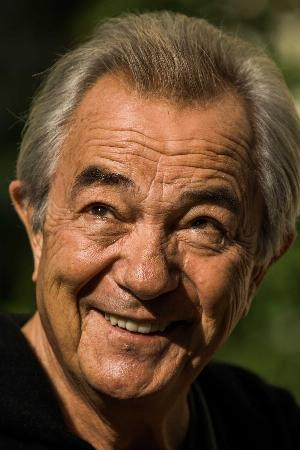
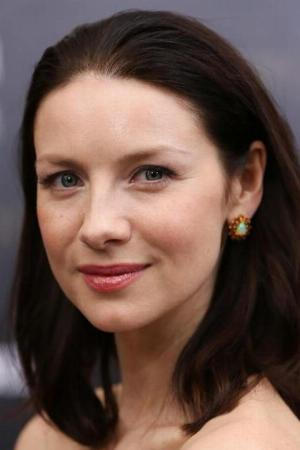
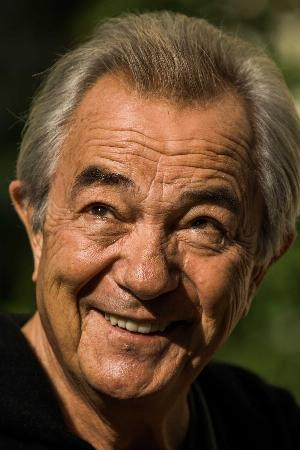
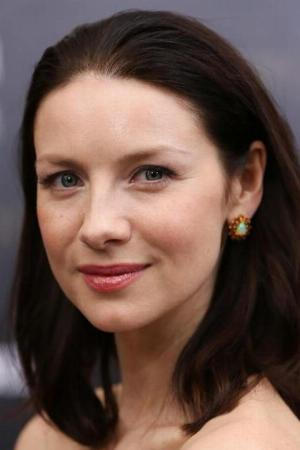

Matt Damon (Carroll Shelby)
Interpreta al ex piloto convertido en diseñador y constructor de autos. Es quien lidera el proyecto del Ford GT40 y actúa como puente entre la empresa y el piloto Ken Miles.
Christian Bale (Ken Miles)
Da vida al talentoso y temperamental piloto británico. Su carácter rebelde y su habilidad al volante son fundamentales para llevar a Ford a competir contra Ferrari.
Tracy Letts (Henry Ford II)
Interpreta al nieto del fundador de Ford. Es el impulsor de la idea de desafiar a Ferrari en Le Mans para revitalizar la imagen de su compañía.
Remo Girone (Enzo Ferrari)
Da vida al legendario fundador de Ferrari. Representa el rival a vencer: el símbolo de la excelencia y el orgullo italiano en el mundo del automovilismo.
Caitriona Balfe (Mollie Miles)
Encarna a la esposa de Ken Miles. Su papel muestra el costado humano de la historia, acompañando y apoyando a su marido en medio de las tensiones y riesgos de las carreras.